TUI
python -m tui exposes roughly 140 API-backed actions in 13 task groups for keyboard-first and remote-terminal work.
Callosum is a local-first scholarly research environment that keeps literature, evidence, methods, manuscripts, and scientific provenance connected throughout the research and writing process.
Start in the curated Library with three licensed papers and two synthetic manuscript drafts. Inspect saved methods and data checks, a literature search, followed-author works, journal and funding discovery, evidence-aware citation suggestions, Meta-Reference, CRediT and disclosure drafts, and a provenance-anchored extraction project. Select Synthesize—or its completed Status receipt—to open “What is the anomalous-is-bad bias?” with claims linked to evidence and source locations. The immutable snapshot needs no backend, credentials, account, external request, or AI call.
This literal screenshot of Callosum’s Library workspace is the map for the complete catalogue below. Its highlighted controls jump to each stage; the interactive demo above lets you use the saved workflow itself.
Filter the complete catalogue by a feature, task, format, method, or integration.
All capabilities shown.
Search deliberately or let journals, topics, authors, and citation neighborhoods bring new work to you. Public-data provenance remains attached to every candidate.
Move from an explicit question to an inspectable stream.
Bring metadata and rights-holder-authorized copies into a library you control.
Use several honest lenses instead of one opaque recommendation score.
Inspect public records about your work without turning them into a personal score.
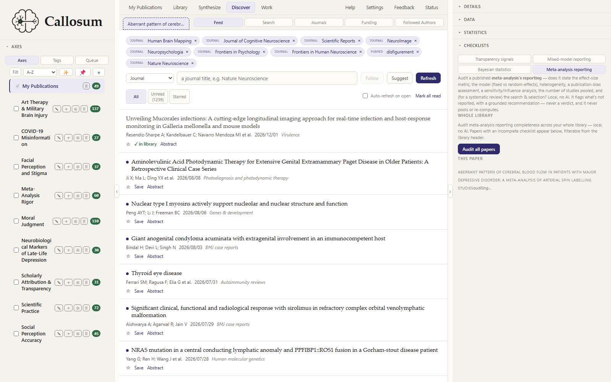
Follow journal issues, preprint categories, keyword searches, and authors. Relevance assistance may order attention; it never silently removes an item.
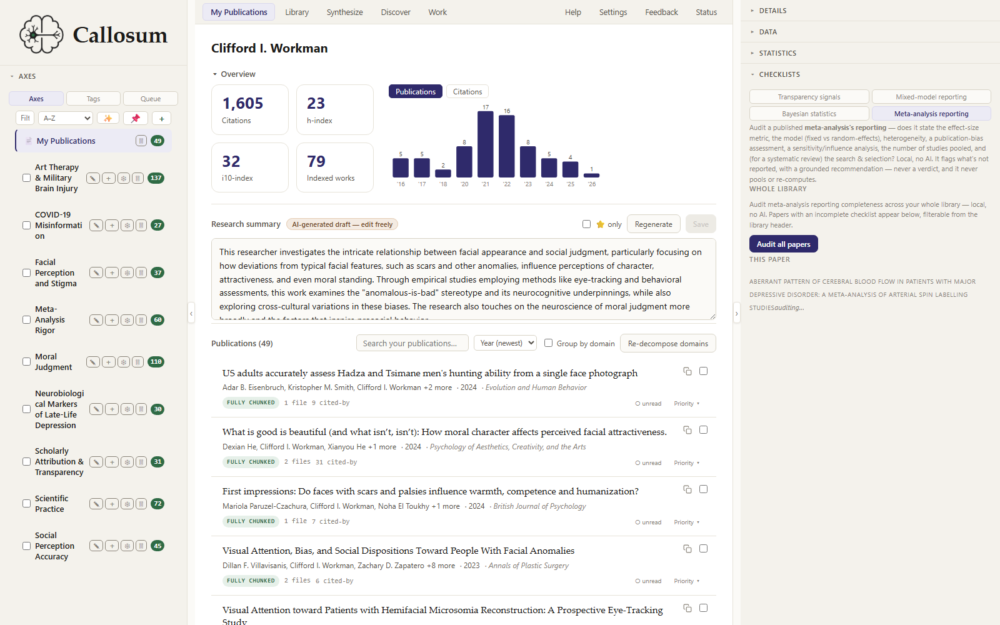
Browse your publications, citations, domains, citing work, and public-record gaps while keeping source coverage explicit.
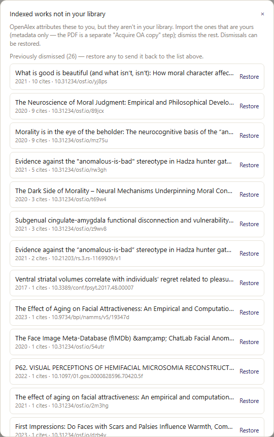
This My Publications view is distinct from the bidirectional literature gap-finder: indexed records become import, dismiss, or restore decisions.
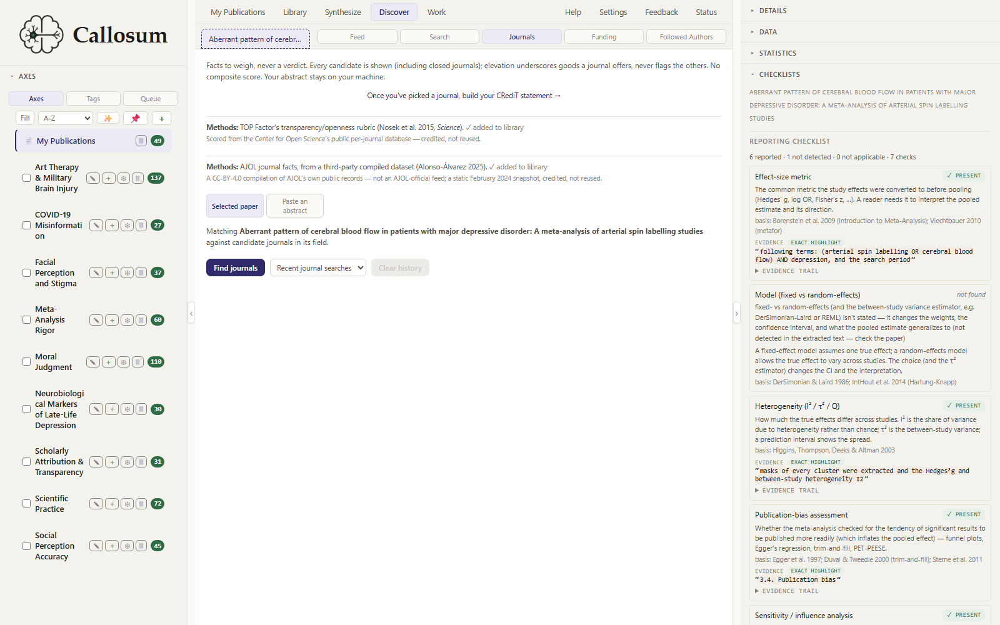
Fit and weighted rank remain distinguishable, and public journal signals stay attributed rather than becoming a hidden legitimacy score.
The library, reader, metadata, and annotations share one local substrate, so a promising result can always be traced back to the document.
Organize by task, vocabulary, and semantic question.
Make changes explicitly and reversibly.
Move between close reading and fast structural scanning.
Keep your interpretation attached to the passage that prompted it.
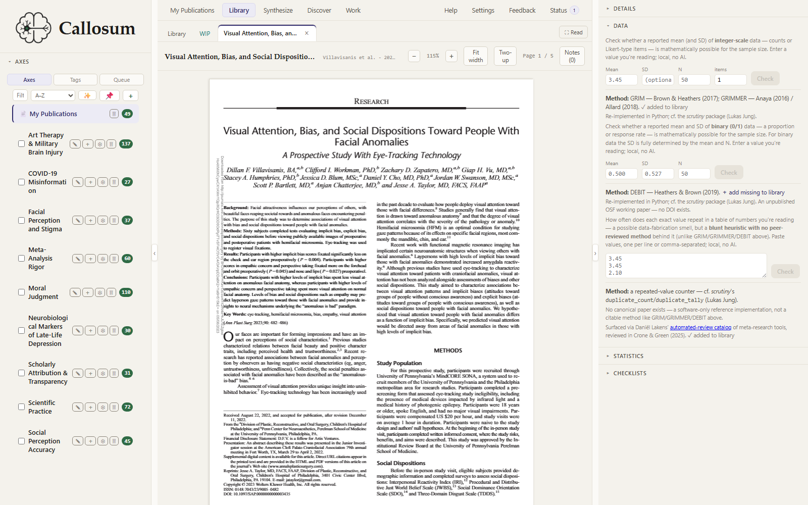
Search, zoom, change page layout, annotate, and move among paper lenses without losing the document or remembered position.
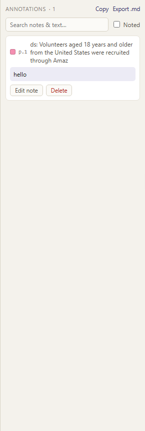
Highlights and notes remain searchable and attached to the paper and passage they came from.
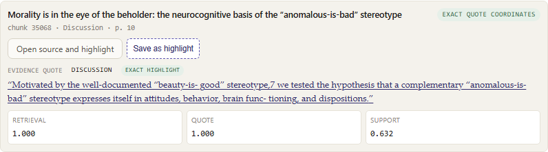
Exact coordinates draw an exact highlight. Region or page-only evidence is labeled honestly and never receives a fabricated box.
Deterministic checks, reporting prompts, integrity records, and critical reading remain separate signal families. Callosum does not collapse them into a paper score.
Recompute what can be recomputed; label heuristics as heuristics.
“Not found” is a prompt to inspect, never proof of omission.
Surface records and distributions without accusing authors.
Pair critique with bounded evidence from the relevant corpus.
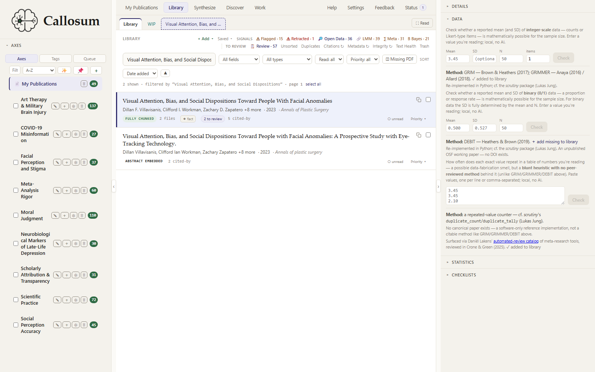
GRIM, GRIMMER, and DEBIT test explicit constraints. Repeated values remain a neutral within-paper signal, not an inference of duplicate publication.
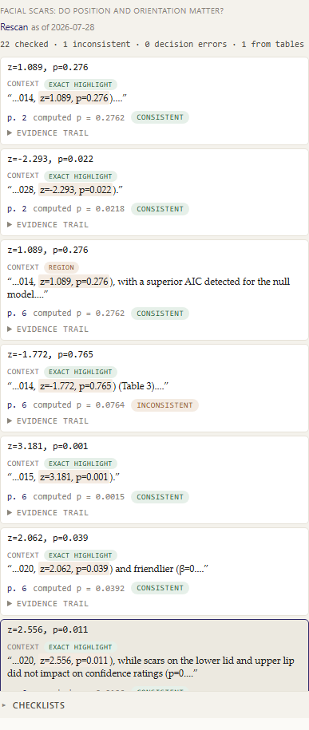
Text and table candidates can be saved per paper, reviewed, and revisited from a manuscript checkpoint.
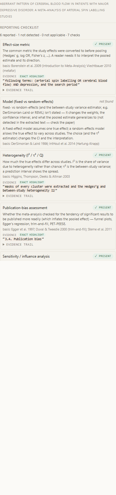
Bayesian, mixed-model, meta-analysis, and transparency families preserve their separate assumptions and evidence. Silence never becomes a certificate.
Generated prose, structured extraction, critical comparison, and registration crosswalks all retain the source basis a scholar needs to disagree.
Draft across papers while checking every sentence back against local sources.
Build an inspectable dataset without pretending the workbench performs the meta-analysis.
Compare immutable registered commitments with publication evidence.
Automation can prioritize attention; it cannot certify alignment.
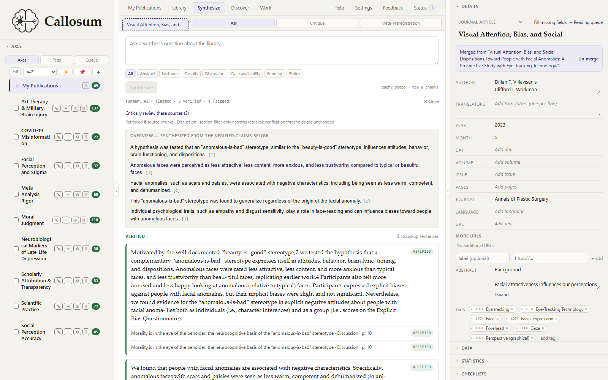
Each generated sentence opens to its quote, page, stance, and confidence. Contrasts remain visible instead of being smoothed into fluent prose.
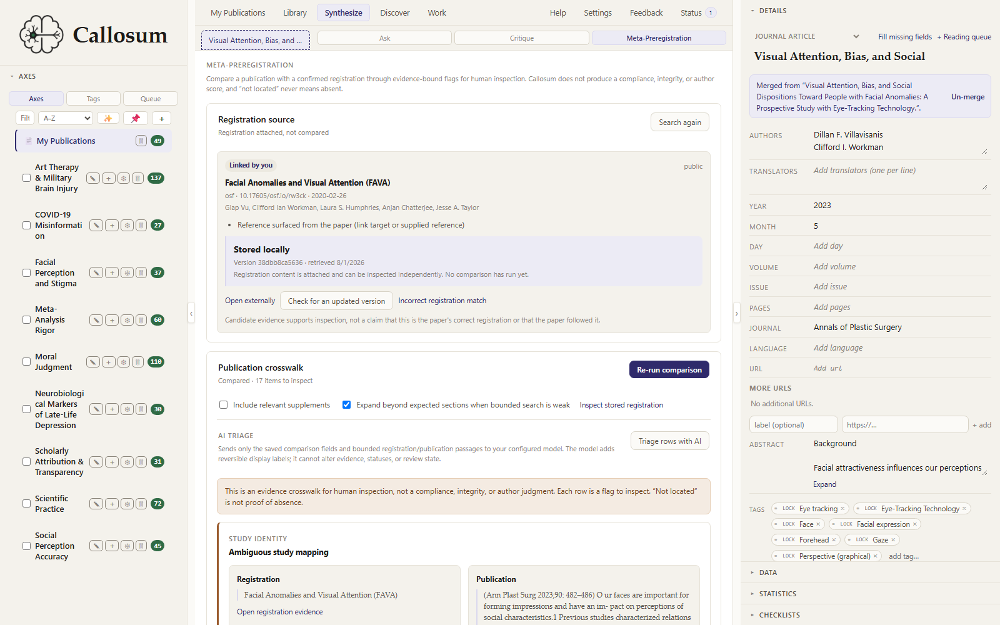
References, candidate links, acquired versions, extracted commitments, evidence retrieval, comparison, review state, and staleness remain separate, inspectable steps.
A draft has exact snapshots, methods context, findings, references, statements, and a door into the document where the prose actually lives.
Keep the unpublished draft first-class without masquerading as a published paper.
Search the local library from a draft sentence and inspect the match.
Format what the team says without inferring contribution or entitlement.
Use the reference manager as an evidence-aware writing partner.
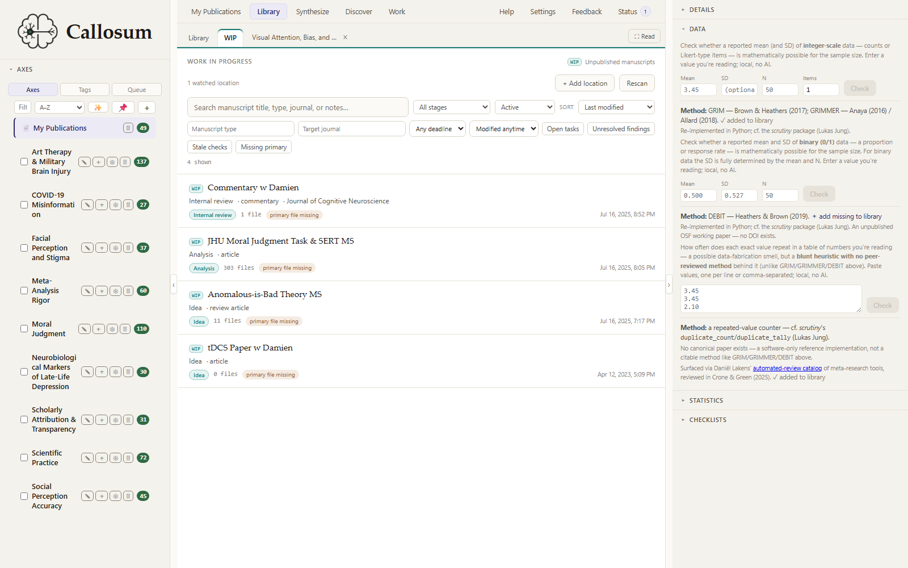
Watched roots become projects with a primary file, checkpoints, exact snapshots, findings, and routes into critical reading and reporting checks.
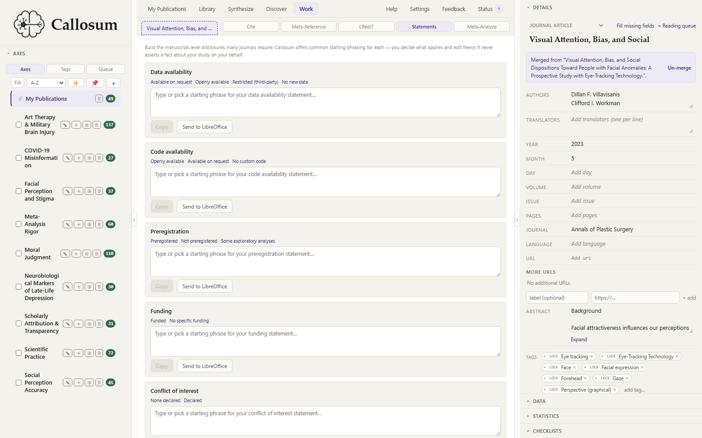
Build funding and CRediT statements from structured inputs. Callosum does not decide who did what.
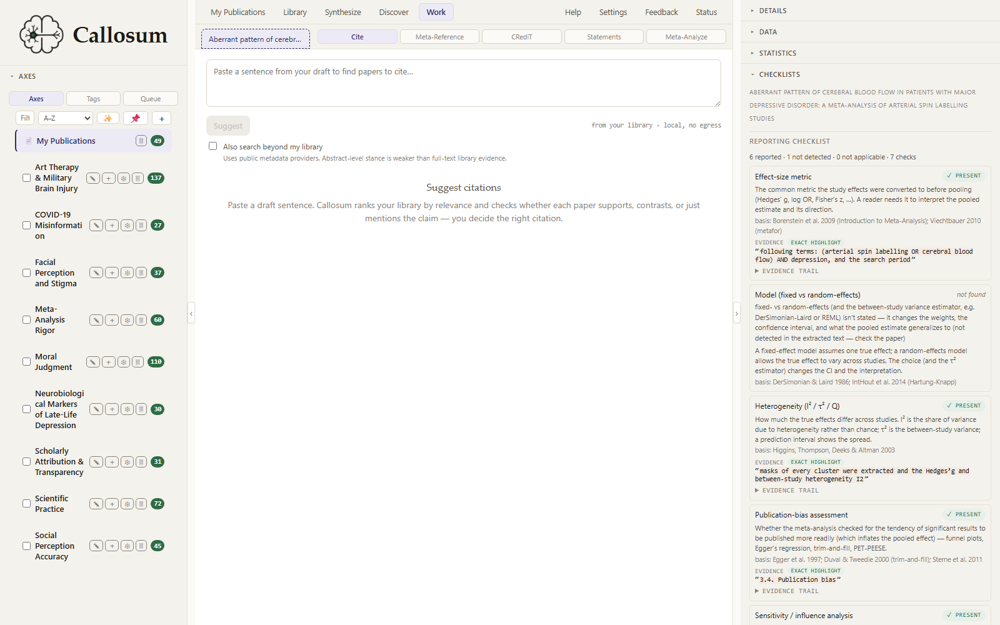
Local relevance and stance help order candidates; the quote and source remain available, and the writer decides what belongs.
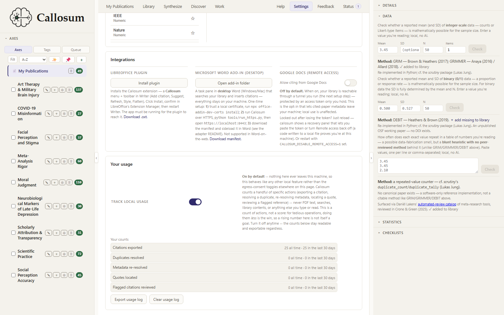
LibreOffice carries the deepest current evidence-aware workflow. Word and Google Docs are represented at their actual supported integration level, without implying identical capabilities.
Final checks attach to exact draft snapshots. System-wide receipts, privacy controls, alternate interfaces, and reversible automation make the computational boundary inspectable too.
Keep each check bound to the draft it actually inspected.
Long work leaves a destination and an honest receipt.
Know what stays local, what can leave, and which provider receives it.
The same local API is available without the graphical shell.
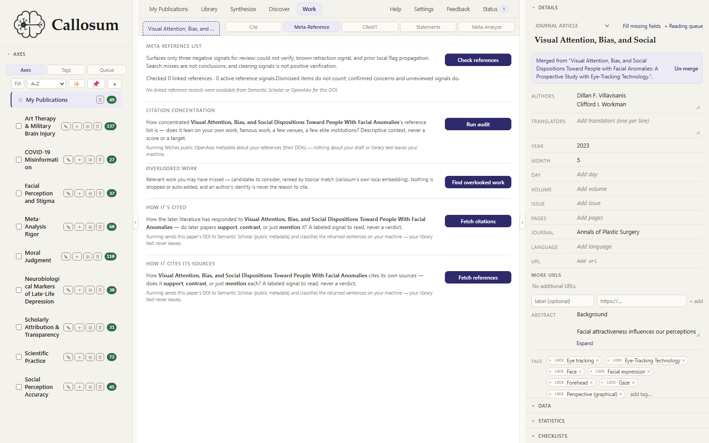
Reference integrity and concentration operate against the manuscript’s actual cited Library papers, with degraded coverage stated plainly.
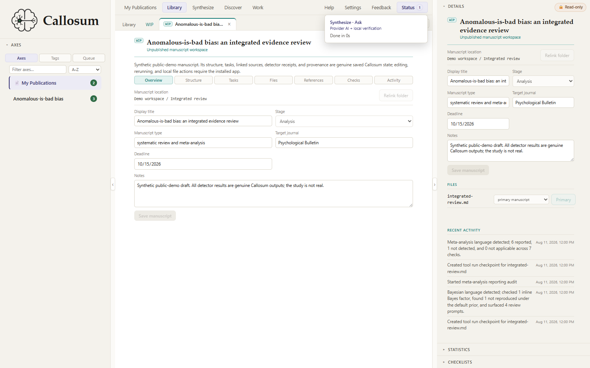
Progress reflects real work when measurable and says when it is not. Completed work retains timing, outcome, compute boundary, and destination.
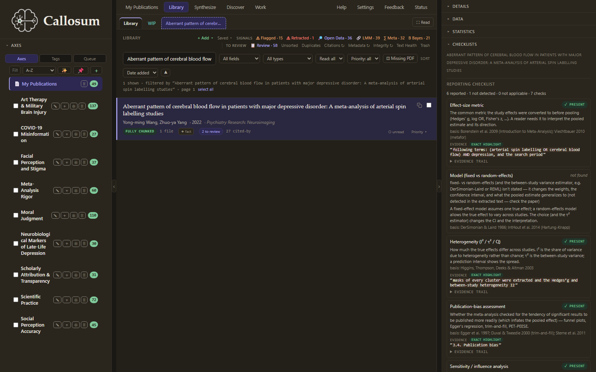
Settings, providers, feedback preview, sync, onboarding, Help, and theme controls follow the same explicit, local-first posture.
python -m tui exposes roughly 140 API-backed actions in 13 task groups for keyboard-first and remote-terminal work.
Five read-only tools let an agent search and inspect the local library without receiving unrestricted database access.
Four write tools require the configured gate, record what changed, and expose a revert path instead of granting silent mutation.
The online demo is read-only and prerecorded. Install Callosum for local libraries, computation, acquisition, writing integrations, and the complete workflow.